Workers Unbound
Workers Unbound extended Cloudflare's serverless platform to support CPU-intensive workloads, removing the execution limits that had previously made the original Workers product off-limits for heavier compute jobs.
The Problem
Removing the CPU cap solved an engineering problem but opened a design one: usage-based pricing meant a Worker that used to be predictable could now generate a surprise bill. Two questions drove the work:
- How might we help users understand when they need to take action, so Workers don't have to stay top of mind?
- How might we help engineers feel confident they're using Workers efficiently — getting the most out of what they're paying for?
Research & Discovery
We talked to a mix of new, existing, internal, and beta Workers users to understand how they thought about cost, metrics, and alerting on the platform. Sessions were affinity-mapped across recurring themes (Onboarding, Pricing, Metrics, Alerting, Usage Setting & Controls, and Productive Use Pricing) to find where the platform was creating anxiety versus confidence.
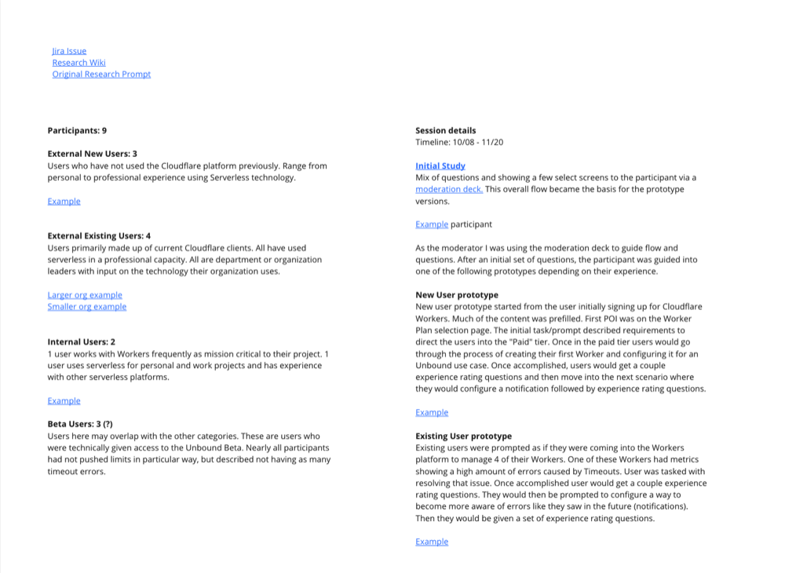
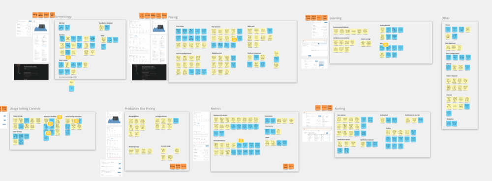
To prioritize, we scored each theme on requirement and ease, pairing the numbers with the quotes behind them. Notifications and analytics both came back as clear needs, but the qualitative detail drove where we went:
- "Diff between eng and billing. Want to know ‘Oh I am spending lots of money’"
- "Breakdown of Workers is useful, but not enough — mono Workers it wouldn't tell you anything"
- "If we aren't billed on CPU and still have a 50ms cap" — some users were still thinking in terms of the old limits even after they were gone
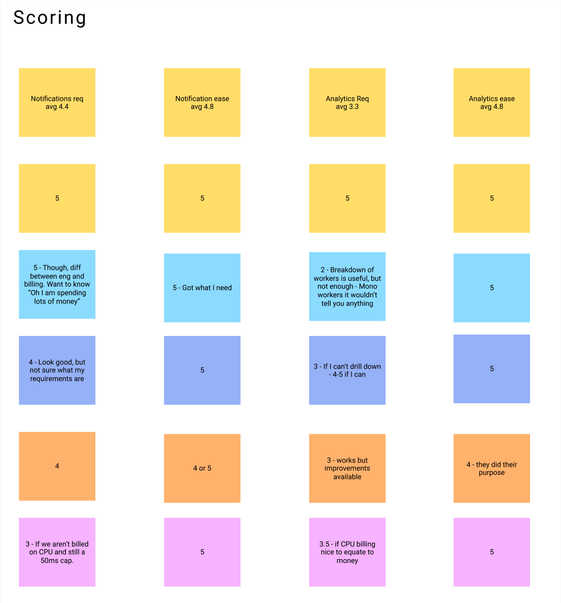
From there we synthesized raw notes into highlights and a direction. Two themes kept coming up:
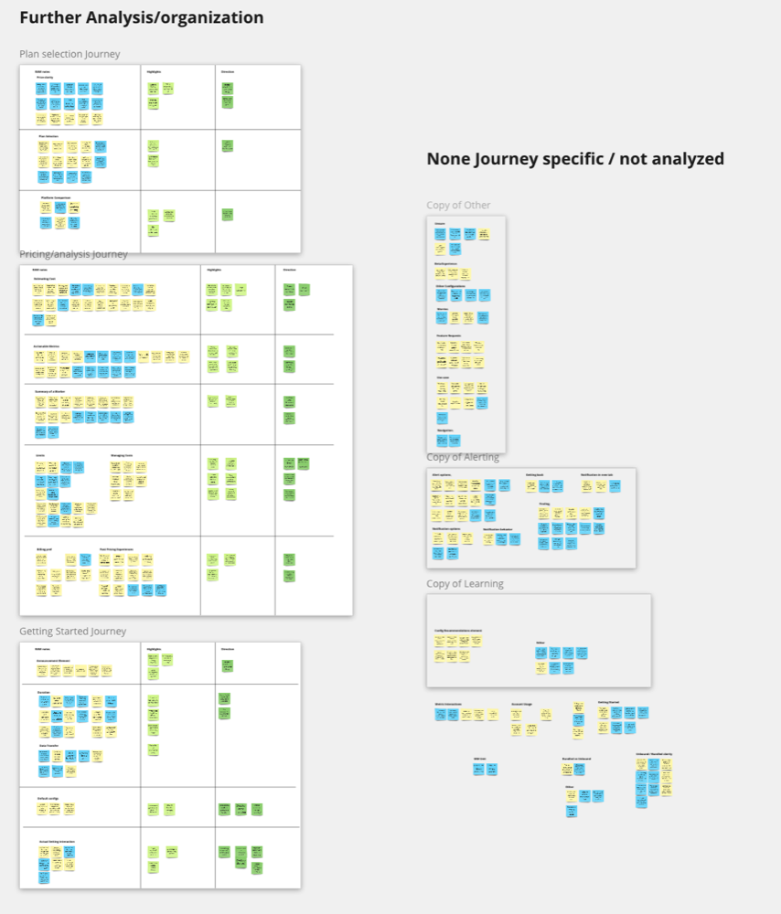
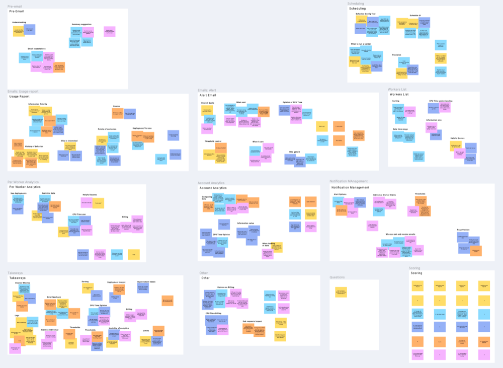
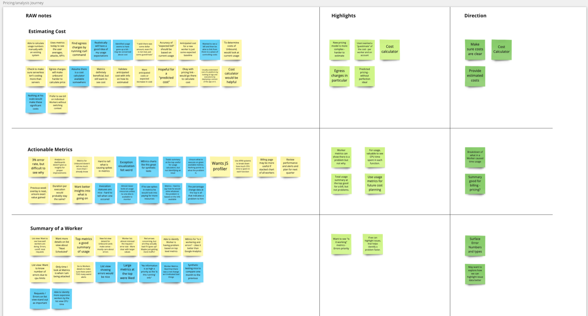
From Feedback to Direction
Earlier rounds of design covered a Workers list view, per-Worker metrics, account-level analytics, notification management, and usage-alert emails. Each one turned up the same thing: CPU time on its own didn't mean much to people. It only became useful once it was tied to billing, and even then reactions split by audience. Hobbyists wanted fixed, predictable pricing ("With AWS I set up an instance and ended up with a $10,000 bill"), while teams cared more about engineering efficiency than the bill itself.
That reframed the work. Instead of a single generic metrics experience, we needed to separate billing concerns from engineering concerns and give people a way to tell whether they were using Workers efficiently, not just how much they were spending.
Recap Prior Feedback
Across the List View, Worker Metrics, Account Analytics, and notification/email explorations, the same note kept surfacing: CPU time isn't useful without billing context, and generic analytics fall flat for accounts running only one or two Workers.
Synthesize & Score
Affinity-mapping sessions against themes like Pricing, Metrics, and Alerting, then scoring each against requirement and ease, showed us where the confusion and anxiety were piling up.
Pick a Direction
Two things stood out: make cost easy to read, and make metrics actionable — tell people not just what happened, but what to do about it.
New Explorations
From there, designs shifted to lead with engineering problems, adding an account usage summary to keep cost visible without making it the whole story.
Plan changes needed to be just as clear. The flow below maps how an account moves from a Bundled plan into Unbound, including the default-plan switch and the confirmation step that only shows up the first time someone completes the upgrade.
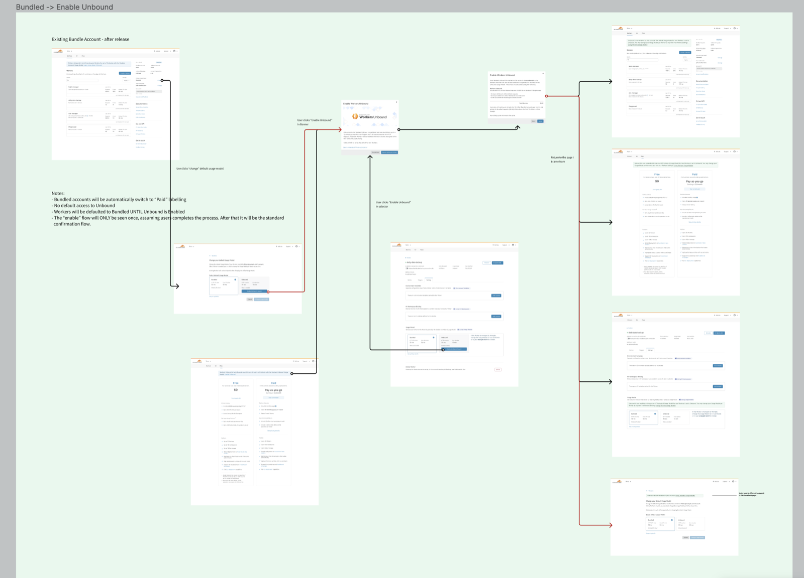
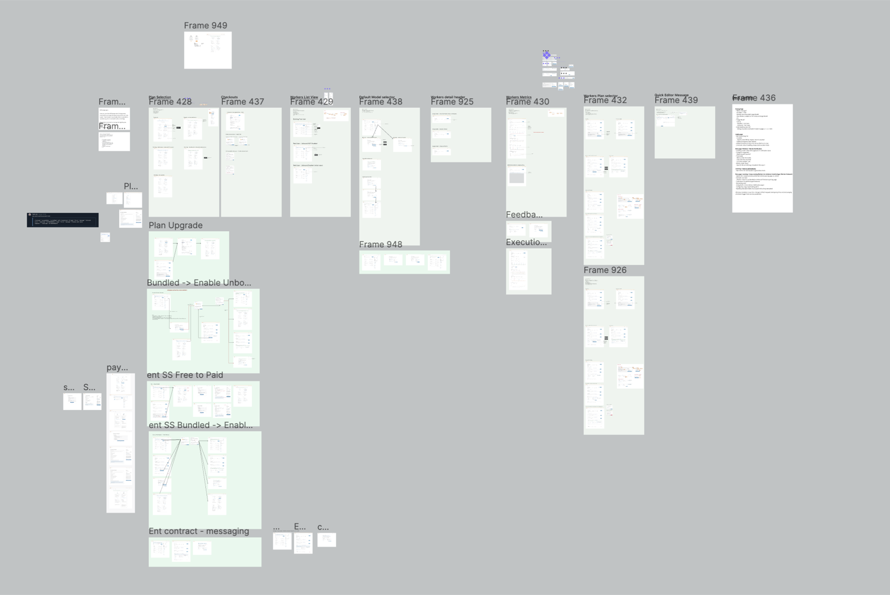
The Experience
The shipped experience shows a Worker's health up top: requests, duration, egress, and CPU time, broken down by percentile and plotted over time, so a developer can quickly tell if something needs attention.
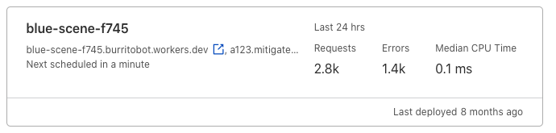
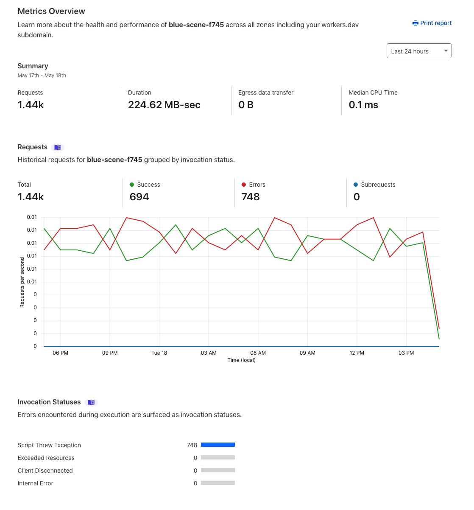
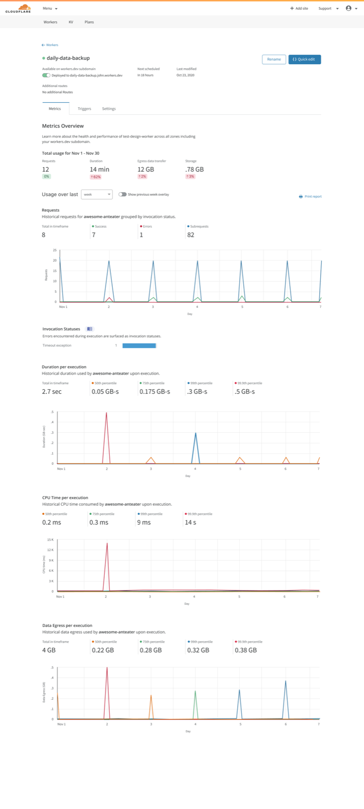
For people who didn't want to check a dashboard at all, we designed a weekly usage report email: a digest of total usage and the top Workers by CPU time, so the information comes to you instead.
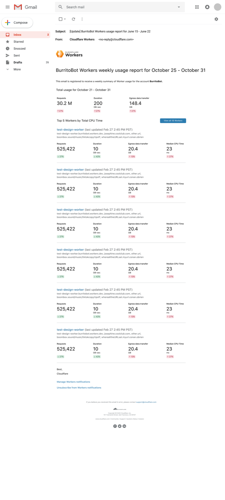
Launch
Workers Unbound shipped on April 14, 2021. The release graphic below was used across announcement channels, and an enablement walkthrough helped new users find the upgrade path on their own.

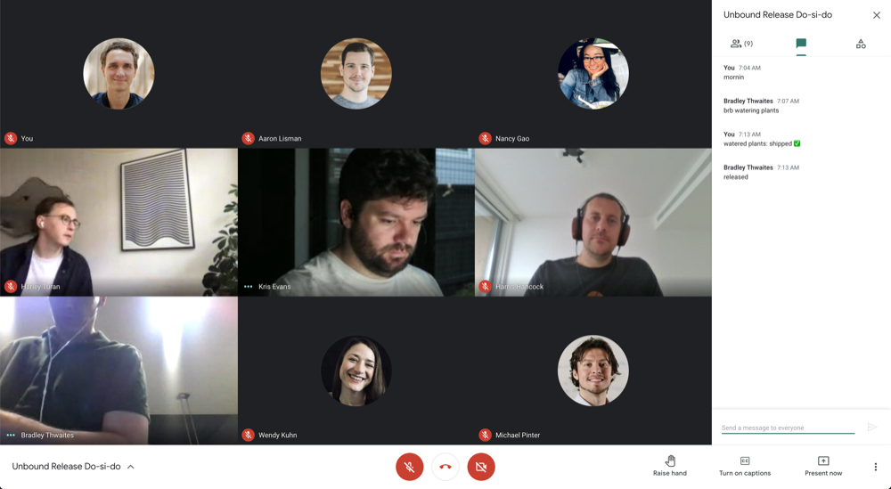
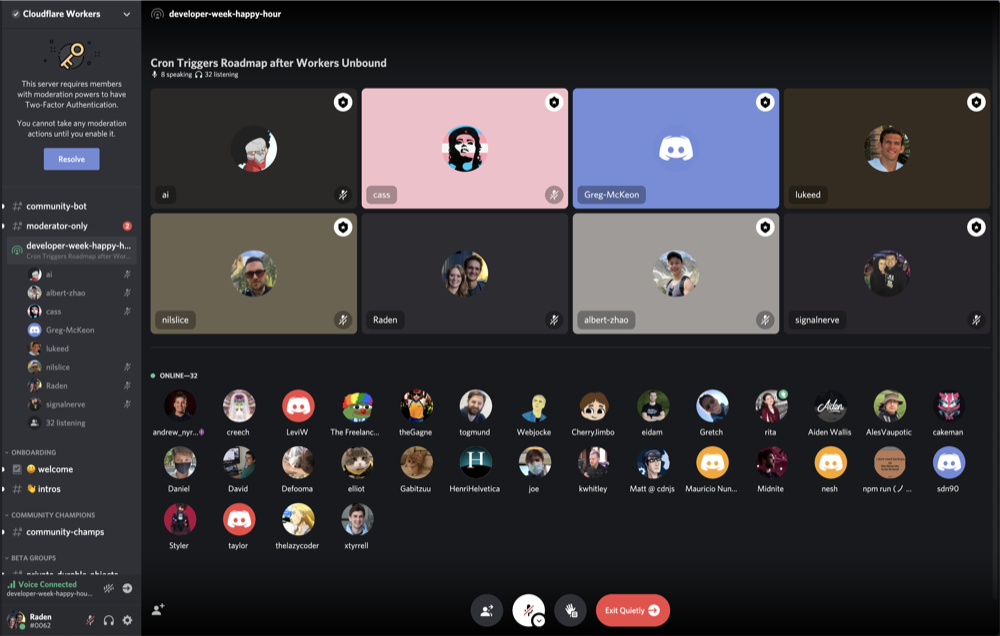
Related Links
Read the full announcement on the Cloudflare Blog: Introducing Workers Unbound.
// More Work
View all projects